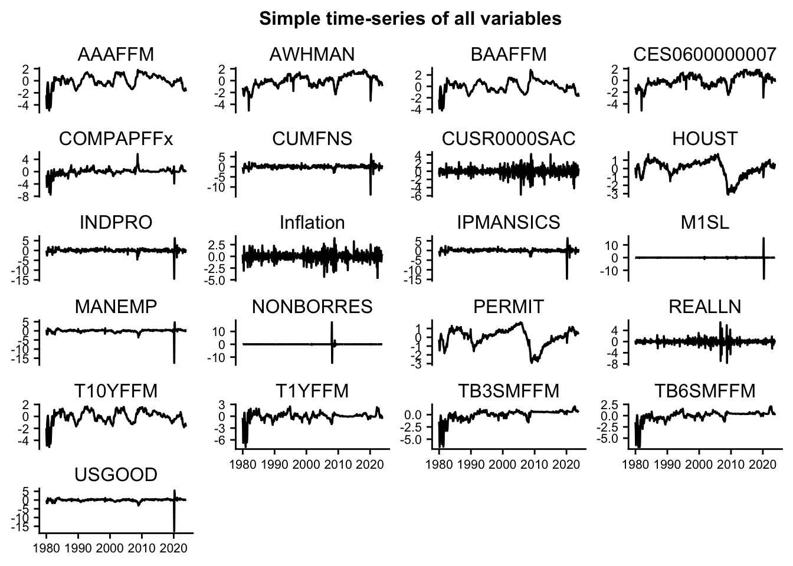
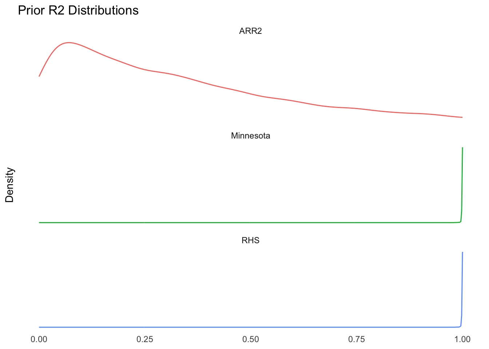
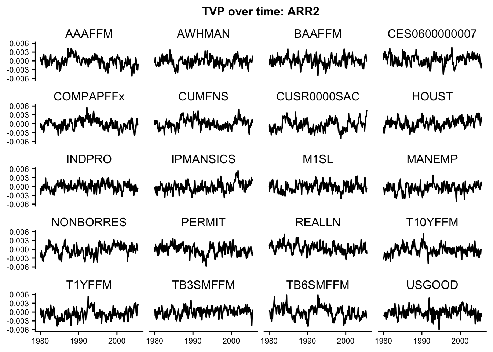
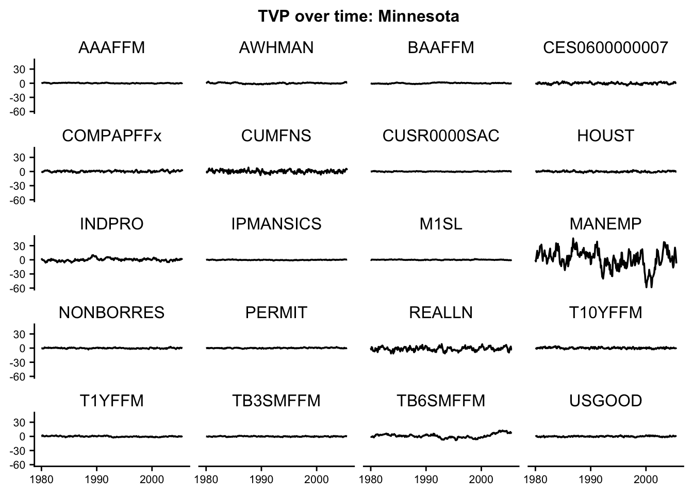
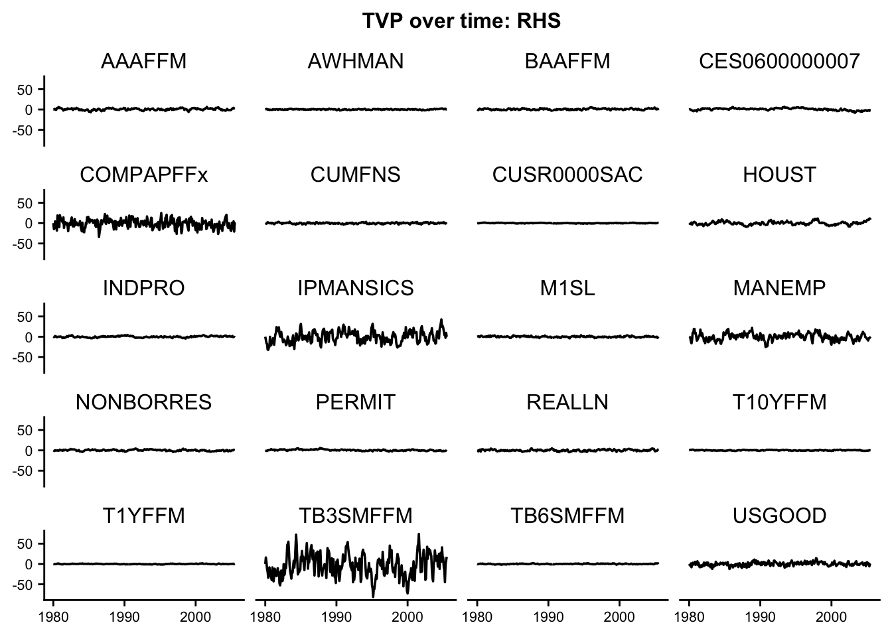
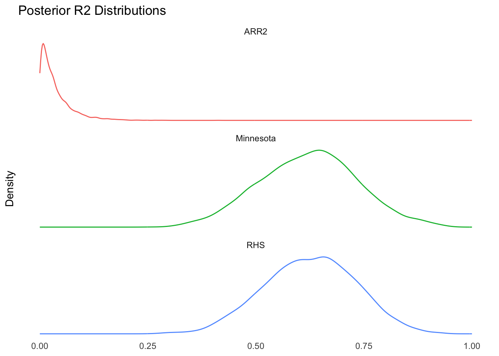
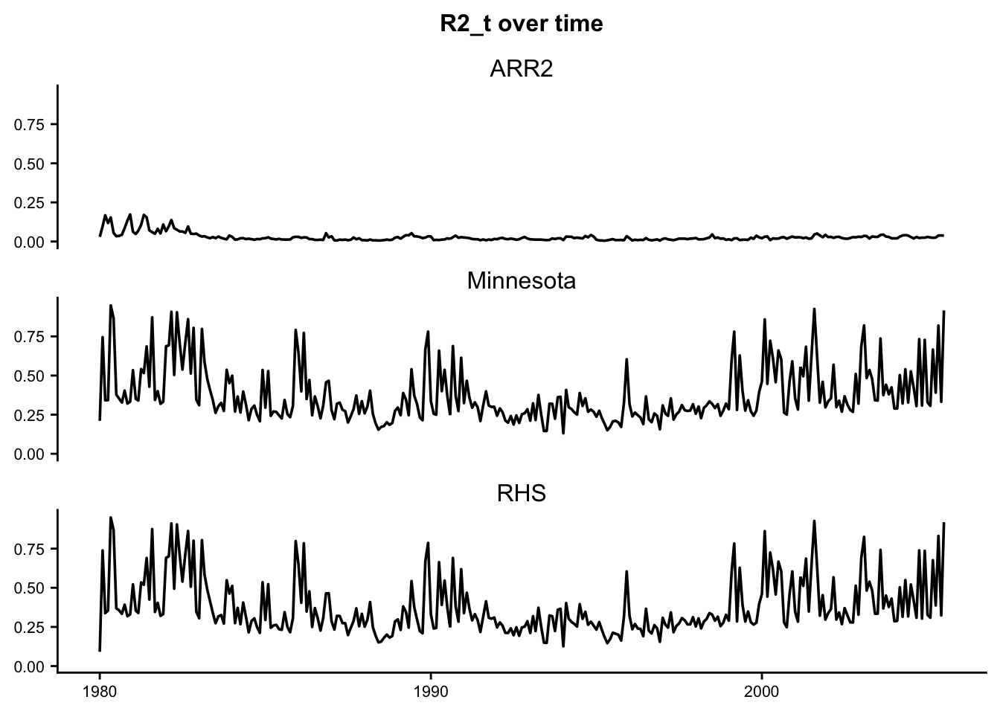
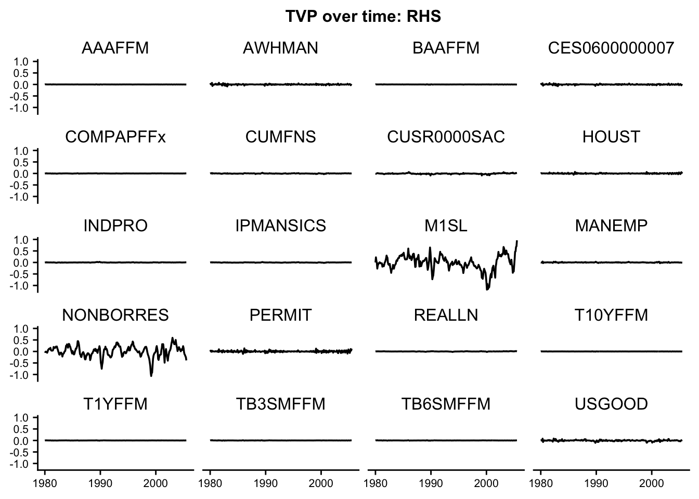

Dynamic Regression Case Study
TVP-R2
This case study showcases how to apply the ARR2 prior of Kohns et al. (2025) for dynamic regression.
Intro: Dynamic Regression
Dynamic regression, or time-varying parameter regression, relaxes the assumption of static (w.r.t. time) regression coefficients. Considering the nature of most time-series applications in social science, such as the response of economic output to financial conditions, it seems reasonable that coefficients should change over time. Indeed, fixing the law of motion for the regression parameters to independent univariate auto-regressive models (AR) has a long tradition (see (J. C. Chan and Strachan 2023) for a brief history of such models in econ) and good empirical performance (Huber, Koop, and Onorante 2021).
Consider a univariate target \(y_t \in \mathbb{R}\) which is modeled via observed K-dimensional covariates \(x_t\) and unknown regression parameters \(\beta_t \in \mathbb{R}^{K \times 1}\) for \(t = 1,\dotsc,M\):
\[ \begin{aligned} y_t &= x_t^{T}\beta_t + \epsilon_t^y \\ \beta_t &= \Phi\beta_{t-1} + \epsilon_t^{\beta}, \end{aligned} \tag{1}\]
where \(\Phi \in \mathbb{R}^{K \times K}\) describes the transition of regression parameters over time. \(\epsilon^{y}_t\) and \(\epsilon^{\beta}_t\) are normal stochastic innovation terms of the target and the parameter process respectively. Equation Equation 1 in fact belongs to the family of discrete state-space models, or more commonly referred to as hidden Markov models. In this literature, \(y_t\) is referred to as the observation equation while the \(\beta_t\) equation is referred to as the state equation.
To keep things simple, assume normal distributions for the observations noise, \(\epsilon_t^{y} \sim N(0,\sigma^2)\), state innovations, \(\epsilon_t^{\beta} \sim N(0,\Sigma_{\beta})\) and that the only unknowns in the covariance are the diagonals \(\Sigma_{\beta} = \mathrm{diag}~(\sigma^2_{\beta,1},\dotsc,\sigma^2_{\beta,K})\). Assume further that the state transition matrix \(\Phi\) is diagonal, \(\Phi = \mathrm{diag}~(\phi_1,\dotsc,\phi_K)\).
Problems with standard state-space model priors
It is standard in the state space literature to assume some form of conditionally conjugate inverse-gamma priors for the state innovation variance \(\sigma^2_{\beta,\cdot} \sim \mathrm{IG}(a,b)\). 2 problems arise from this:
The \(\mathrm{IG}\) bounds the state variance away from 0, leading to over-estimation of the state-variance (Frühwirth-Schnatter and Wagner 2010).
Inflated variance in predictions
While the first problem often causes the second problem, it’s also makes it harder to judge which parameters are truly varying over time. Those problems are poised to be exacerbated in higher dimensions.
A symptom of over-estimating state noise of the state-process is that the variance of the predictor term \(\mathrm{var}(x_t^{T}\beta_t)\), dwarfs the variance of the observations noise, \(\sigma^2\), leading to high variance explained, \(R^2\) .
Review of R2 framework for stationary state space models
Kohns et al. (2025) have extended the R2D2 framework of Zhang et al. (2022) to a large class of discrete time-series models, including stationary state-space models.
Denote the location of the normal model at time point t as \(\mu_t\). Then, following Gelman et al. (2019) , \(R^2\) is defined as
\[ R^2 = \frac{\mathrm{var}(\mu_t)}{\mathrm{var}(\mu_t) + \sigma^2_{y}}. \]
For the dynamic regression in Equation 1, Kohns et al. (2025) show that the \(R^2\) boils down to
\[ R^2 = \frac{\sigma^2_y\sum_{i=1}^K \frac{\sigma^2_{\beta,i}}{1-\phi^2_i}}{\sigma^2_y\sum_{i=1}^K \frac{\sigma^2_{\beta,i}}{1-\phi^2_i} + \sigma^2_y} = \frac{\tau^2}{\tau^2 + 1}, \]
where \(\tau^2 =\sum_{i=1}^K \frac{\sigma^2_{\beta,i}}{1-\phi^2_i}\) are the scaled sum of marginal variances of the dynamic regression components. Assuming \(R^2 \sim \mathrm{beta}(\mu_{R^2},\varphi_{R^2}^2)\), the ARR2 prior for each state at time t, conditional on the states up until t-1 is thus
\[ \beta_{t,i} \sim N(\phi_{i}\beta_{t-1,i},\sigma^2(1-\phi^2_i)\psi_i\tau^2). \]
\(\psi \sim \mathrm{Dir}(\alpha)\) decomposes the variance explained to each of the K state components of the dynamic regression. The hyper-parameters \(\alpha\) determine the correlation structure and sparsity a-priori among the states (lower \(\alpha\) means higher degree of sparsity). See Kohns et al. (2025) for recommendations on how to set \(\alpha\).
In this case-study, we will consider the two competing models showcased in Kohns et al. (2025), the Minnesota and regularised horseshoe models.
Minnesota Prior
The Minnesota prior assumes that the starting conditions, \(\beta_{0,j} \sim N(0,\frac{\hat{\sigma}_y^2}{\hat{\sigma}_{x,i}^2}\kappa_i^2)\), where \(\kappa_i^2 \sim G(1,1/(0.04^2))\) for \(i=1,\dotsc, K\) Giannone, Lenza, and Primiceri (2012). The variance-terms in the fraction appearing in the prior are estimated as the residual variance of univariate AR(4) models following J. C. C. Chan (2021). For the state-standard deviation, we allow for modelling with a fat-tailed distribution, \(\beta_{t,i} \sim N(\phi_{i}\beta_{t-1,i},\lambda^2_{i})\), \(\lambda_i \sim C_+(0,1)\).
Regularised Horseshoe Prior (RHS)
The RHS prior assumes that the starting conditions \(\beta_{0,j} \sim N(0,\lambda^2_i\tau^2_{RHS})\), where \(\lambda_{i}\) and \(\tau_{RHS}\) follow the modified Cauchy priors as in Piironen and Vehtari (2017). For the state-standard deviation, we allow for modelling with a fat-tailed distribution, \(\beta_{t,i} \sim N(\phi_{i}\beta_{t-1,i},\lambda^2_{i})\), \(\lambda_i \sim C_+(0,1)\). The expected number of non-zero coefficients in the \(\beta_0\) are set to K/2 as explained in Kohns et al. (2025).
Application: Inflation forecasting
We take the US monthly inflation example from Kohns et al. (2025) to showcase the TVP regressions.
Now, let’s download the latest vintages of the data from the FRED-MD data base:
subset <- "subset" # Set to 0 for full FRED-MD data-set
outfile <- "output_location"
####----- User Choices -----####
# Forecast horizon
h <- 1
# Degree of differening (dif = 2 adheres to Hauzenber et al., 2023)
dif <- 2
# Number of lags
lags <- 0
# Covariate choice
frednames <- c("INDPRO","IPMANSICS","CUMFNS","HOUST","PERMIT","USGOOD","MANEMP"
,"CES0600000007","AWHMAN","CUSR0000SAC","M1SL","NONBORRES","REALLN",
"COMPAPFFx","TB3SMFFM","TB6SMFFM","T1YFFM","T10YFFM","AAAFFM","BAAFFM")
####----- Preparation Steps -----####
## 1: Supply FRED mnemonics for data download. We follow Hauzenber et al. (2023)
filepath <- "https://files.stlouisfed.org/files/htdocs/fred-md/monthly/2024-06.csv"
startdate <- as.Date("01/01/1980","%m/%d/%Y")
enddate <- as.Date("01/01/2024","%m/%d/%Y")
data <- fredmd(filepath, date_start = startdate, date_end = enddate, transform = TRUE)
## 2: Format data into a data frame
datevec <- data$date
if (subset == "subset") {
data <- data[,frednames]
} else {
data <- data[,2:ncol(data)]
}
## 3: Impute any missing values following Ercument Cahan, Jushan Bai, and Serena Ng (2021)
data_est <- tp_apc(data, 4, center = FALSE, standardize = FALSE, re_estimate = TRUE)
data_imp <- data_est$data
## 3: Get inflation data
fredr_set_key("315410e54f1b6f2552a99cefd47e2344") #API key
inflation <- fredr( series_id = "CPIAUCSL",
observation_start = startdate,
observation_end = enddate,
frequency = "m") #percent change transformation
inflation <- inflation$value
if (dif == 2) {
inflation <- log(inflation[(h+2):length(inflation)]/inflation[2:(length(inflation)-h)]) - log(inflation[(2):(length(inflation)-h)]/inflation[1:(length(inflation)-h-1)])
} else if (dif ==1) {
inflation <- log(inflation[(h+2):length(inflation)]/inflation[2:(length(inflation)-h)])*100 # following Chan (2017) The Stochastic Volatility in Mean Model With TimeVarying Parameters
}
X <- as.matrix(data_imp[2:(dim(data_imp)[1]-h),])
T <- length(inflation)
if (subset == "subset") {
K <- length(frednames)
} else {
K <- ncol(X)
}
# Create matrix of lags
if (lags == 0){
X_all <- array(0,c(T,K))
} else {
X_all <- array(0,c(T-lags,K*lags))
}
if (lags > 0){
for (j in 1:K){
lagtemp <- lagmatrix(X[,j],1:lags)
X_all[,(lags*(j-1)+1):(lags*j)] <- lagtemp[((lags+1):dim(lagtemp)[1]),]
}
}
####----- Save Data -----####
# placeholder for data matrix
y <- as.vector(inflation[(lags+1):length(inflation)])
datevec <- datevec[(lags+1):length(inflation)]
if (subset == "subset") {
Xnames <- frednames
} else {
Xnames <- colnames(data_imp[2:ncol(data_imp)])
}
yname <- "CPIAUCSL"
lagstructure <- rep(1:lags,K)
emp_app <- list(X = X,
y = y,
Xnames = Xnames,
yname = yname,
datevec = datevec,
lagstructure = lagstructure)
# Get all objects in the environment
all_objects <- ls()
# Identify functions
function_objects <- sapply(all_objects, function(x) is.function(get(x)))
# Create a vector of objects to keep (emp_app and functions)
objects_to_keep <- c("emp_app", names(function_objects)[function_objects])
# Remove all objects except for those to keep
rm(list=setdiff(all_objects, objects_to_keep))Let’s quickly plot the time-series.
# Convert emp_app into a dataframe
emp_app_df <- data.frame(
Time = as.Date(emp_app$datevec),
Inflation = scale(emp_app$y),
scale(emp_app$X)
)
# Add appropriate column names
colnames(emp_app_df)[3:ncol(emp_app_df)] <- emp_app$Xnames
# Prep Data for plotting
dat <- emp_app_df %>%
pivot_longer(-Time, names_to = "variable", values_to = "value")
# Plot the data
tsplot <- ggplot(dat, aes(Time, value)) +
geom_line() +
facet_wrap(. ~ variable, scales = "free_y", nrow = 6) +
cowplot::theme_half_open() +
theme(
plot.title = element_text(hjust = 0.5, size = 12),
legend.position = "none",
axis.title.x = element_blank(),
axis.title.y = element_blank(),
strip.background = element_blank(), # Remove facet title box color
axis.text.x = element_text(size = 8), # Decrease x-axis label font size
axis.text.y = element_text(size = 8) # Decrease y-axis label font size
) +
ggtitle("Simple time-series of all variables")
# Print the plot
tsplot
A fairly quick check to investigate whether we should expect there to be variation in the coefficient process at all is to estimate a rolling window OLS regressions for each covariate separately. This won’t be a perfect indicator for joint variation, as correlation might cause many of the coefficient processes to be shrunk to zero. This will be expected given that macro data are typically highly correlated Giannone, Lenza, and Primiceri (2021).
# Calculate the rolling window coefficients
betas_df <- calculate_rolling_betas(emp_app, 100)
# Reshape the data for plotting
betas_long <- betas_df %>%
pivot_longer(-Time, names_to = "variable", values_to = "value") %>%
mutate(Time = as.Date(Time))
# Plot the data
tsplot <- ggplot(betas_long, aes(Time, value)) +
geom_line() +
facet_wrap(~ variable, scales = "free_y", nrow = 6) +
cowplot::theme_half_open() +
theme(
plot.title = element_text(hjust = 0.5, size = 12),
legend.position = "none",
axis.title.x = element_blank(),
axis.title.y = element_blank(),
strip.background = element_blank(), # Remove facet title box color
axis.text.x = element_text(size = 8), # Decrease x-axis label font size
axis.text.y = element_text(size = 8) # Decrease y-axis label font size
) +
ggtitle("Coefficients based on 100-month rolling window")
# Print the plot
print(tsplot)
From simple OLS based on a 100-month window, it is apparent that there is some time-variation in the coefficients, hence, there is likely need for dynamic regression.
For computational simplicity, we focus here on predicting only a single point out-of-sample, September-2005, at which point inflation took a nose-dive. This is observation 308 in the date-vector.
Stan Model
Compile and estimate the following Stan models:
- ARR2 prior
- Minnesota prior
- RHS prior
arr2 <- cmdstan_model("stan/arr2_dynreg_v2.stan")
minnesota <- cmdstan_model("stan/minnesota_dynreg.stan")
rhs <- cmdstan_model("stan/rhs_dynreg.stan")
# Helper function to create the minnesota model input
p <- 4 # just needed in order to get the Minnesota estimatesPrior Predictive Analysis
# data for stan models
dat <- list(
X = scale(emp_app$X)[1:307,],
Y = as.vector(emp_app$y[1:307])*100,
Xf = as.vector(scale(emp_app$X[1:308,])[308,]),
yf = (emp_app$y[308])*100,
K = dim(emp_app$X)[2],
T = 307,#dim(emp_app$X)[1],
mean_R2 = 1/3,
prec_R2 = 3,
alpha_sd = 3,
var_x = rep(1,dim(emp_app$X)[2]),
cons = rep(1,dim(emp_app$X)[2]),
var_x_minn = as.numeric(minn_sig_create(scale(emp_app$X),p)),
var_y_minn = as.numeric(minn_sig_create((emp_app$y*100),p)),
hs_df = 3,
hs_df_global = 1,
hs_df_slab = 4,
hs_scale_global = 1,
hs_scale_slab = 2,
p0 = round(dim(emp_app$X)[2]/2),
pp = 1 # if 1, then the likelihood contribution is left out of the model block creating prior predictives
)
fit_arr2 <- arr2$sample(
data = dat,
seed = 123,
chains = 4,
adapt_delta = 0.99,
max_treedepth = 15,
parallel_chains = 4,
refresh = 0,
iter_warmup = 1000,
iter_sampling = 1000,
show_messages = FALSE
)
fit_minn <- minnesota$sample(
data = dat,
seed = 123,
chains = 4,
adapt_delta = 0.99,
max_treedepth = 15,
parallel_chains = 4,
refresh = 0,
iter_warmup = 1000,
iter_sampling = 1000,
show_messages = FALSE
)
fit_rhs <- rhs$sample(
data = dat,
seed = 123,
chains = 4,
adapt_delta = 0.99,
max_treedepth = 15,
parallel_chains = 4,
refresh = 0,
iter_warmup = 1000,
iter_sampling = 1000,
show_messages = FALSE
)Now, let’s plot the prior predictive R2 distributions. Remember that \(y_t = x_t^T \beta_t + \epsilon^y_t\). Define \(\mu_t = x_t^T\beta_t\), and stack across all obervations as \(\mu = (\mu_1,\dotsc,\mu_T)\), then we define the prior predictive R2 as for each draw \((s)\) of the prior as \(\mathrm{var}(\mu^{(s)})/(\mathrm{var}(\mu^{(s)}) + \sigma^{2,(s)}_{y})\).
## Prior R2 Graphs
# Extract Marg_r2 values
r2_arr2 <- fit_arr2$draws(variables = c("R2_samp"), format = "matrix")
r2_minnesota <- fit_minn$draws(variables = c("R2_samp"), format = "matrix")
r2_rhs <- fit_rhs$draws(variables = c("R2_samp"), format = "matrix")
# Convert draws to data frames
df_arr2 <- as.data.frame(r2_arr2) %>% mutate(model = "ARR2")
df_minnesota <- as.data.frame(r2_minnesota) %>% mutate(model = "Minnesota")
df_rhs <- as.data.frame(r2_rhs) %>% mutate(model = "RHS")
# Rename the column for consistency
colnames(df_arr2)[1] <- "marg_r2"
colnames(df_minnesota)[1] <- "marg_r2"
colnames(df_rhs)[1] <- "marg_r2"
# Combine data frames
combined_df <- bind_rows(df_arr2, df_minnesota, df_rhs)
# Create the plot
p <- ggplot(combined_df, aes(x = marg_r2, color = model)) +
geom_density() +
labs(title = "Prior R2 Distributions", y = "Density", x = "Marginal R2") +
xlim(0, 1) +
theme_minimal() +
facet_wrap(~ model, scales = "free_y", ncol = 1) +
theme(
legend.position = "none",
panel.grid = element_blank(),
axis.text.y = element_blank(),
axis.ticks.y = element_blank(),
axis.title.x = element_blank(),
panel.border = element_blank()
)
print(p)
The ARR2 prior clearly adheres to the logic imposed by the prior framework, while the Minnesota and RHS models tend toward an \(R^2\) of 1 due to the state variance drowning out the variance of the observation equation. This manifests as very erratic prior expected paths of the TVP process:



Posterior Analysis
First, let’s estimate the models with the likelihood contribution included in the model block:
Now, let’s look at the posterior of the overall R2:
## R2 Graphs
# Extract Marg_r2 values
r2_arr2 <- fit_arr2$draws(variables = c("R2_samp"), format = "matrix")
r2_minnesota <- fit_minn$draws(variables = c("R2_samp"), format = "matrix")
r2_rhs <- fit_rhs$draws(variables = c("R2_samp"), format = "matrix")
# Convert draws to data frames
df_arr2 <- as.data.frame(r2_arr2) %>% mutate(model = "ARR2")
df_minnesota <- as.data.frame(r2_minnesota) %>% mutate(model = "Minnesota")
df_rhs <- as.data.frame(r2_rhs) %>% mutate(model = "RHS")
# Rename the column for consistency
colnames(df_arr2)[1] <- "marg_r2"
colnames(df_minnesota)[1] <- "marg_r2"
colnames(df_rhs)[1] <- "marg_r2"
# Combine data frames
combined_df <- bind_rows(df_arr2, df_minnesota, df_rhs)
# Create the plot
p <- ggplot(combined_df, aes(x = marg_r2, color = model)) +
geom_density() +
labs(title = "Posterior R2 Distributions", y = "Density", x = "Marginal R2") +
xlim(0, 1) +
theme_minimal() +
facet_wrap(~ model, scales = "free_y", ncol = 1) +
theme(
legend.position = "none",
panel.grid = element_blank(),
axis.text.y = element_blank(),
axis.ticks.y = element_blank(),
axis.title.x = element_blank(),
panel.border = element_blank()
)
print(p)
Clearly, the Minnesota prior regularises the variation in the coefficient processes less than the ARR2 prior, yielding larger marginal \(R^2\) estimates. It is well known that inflation series are hard to predict Stock and Watson (2006) , and we would also expect to find a low \(R^2\) estimates.
Since the \(\beta\) processes are functions of time, an estimate of time-variation in \(R^2\) may be approximated by \(R^2_t = \frac{\beta_t^Tx_t^Tx_t^T\beta_t}{\beta_t^Tx_t^Tx_t^T\beta_t + \sigma^2_y}\). This is how the mean of this quantity varies for the two models over time:
timevec <- as.Date(emp_app$datevec[1:307])
betas1 <- extract_r2(fit_arr2, "ARR2", timevec)
betas2 <- extract_r2(fit_minn, "Minnesota", timevec)
betas3 <- extract_r2(fit_rhs, "RHS", timevec)
# Combine all R2_t data into one dataframe
betas <- bind_rows(betas1, betas2, betas3)
# Plot the data
tsplot <- ggplot(betas, aes(Time, R2_t)) +
geom_line() +
facet_wrap(~ Model, scales = "fixed",ncol =1) +
cowplot::theme_half_open() +
theme(
plot.title = element_text(hjust = 0.5, size = 12),
legend.position = "none",
axis.title.x = element_blank(),
axis.title.y = element_blank(),
strip.background = element_blank(), # Remove facet title box color
axis.text.x = element_text(size = 8), # Decrease x-axis label font size
axis.text.y = element_text(size = 8) # Decrease y-axis label font size
) +
ggtitle("R2_t over time")
# Print the plot
print(tsplot)
The Minnesota and RHS models tend to favor more variation and larger magnitudes in \(R^2\). Let’s look at the posterior mean estimates of \(\beta_t\) over time:



Finally, let’s have a quick look at the predictions for the held-out data point.
fit_objects <- list(
arr2 = fit_arr2,
minn = fit_minn,
rhs = fit_rhs
)
comparison_table <- compare_elpd(fit_objects)
print(comparison_table)# A tibble: 3 × 3
Model elpd_diff se_diff
<chr> <dbl> <dbl>
1 arr2 0 0.06
2 minn -13.4 0.77
3 rhs -13.4 0.65The ARR2 model also results in far better predictions.
Conclusion and Discussion
Prior and posterior R2 distributions show the similar behaviour as to what Kohns et al. (2025) have shown: the ARR2 prior is the only prior that allows by design to have direct control over the models prior predictive R2 distribution
This leads to better predictions, at least for the out-of-sample observation under investigation, although in the future it would be better to do a full, expanding window predictions analysis as was done in Kohns et al. (2025).
Allowing some states to have large variance results in meaningful differences in the coefficients processes as well as the R2 over time.
The non-centred state-space inference approach analysed in Frühwirth-Schnatter and Wagner (2010) would allow also non-ARR2 priors to exert stronger shrinkage on the state-standard deviations. It would be interesting derive the R2 prior for the non-centred formulation and then compare to non-centred versions of the competing priors here, too.